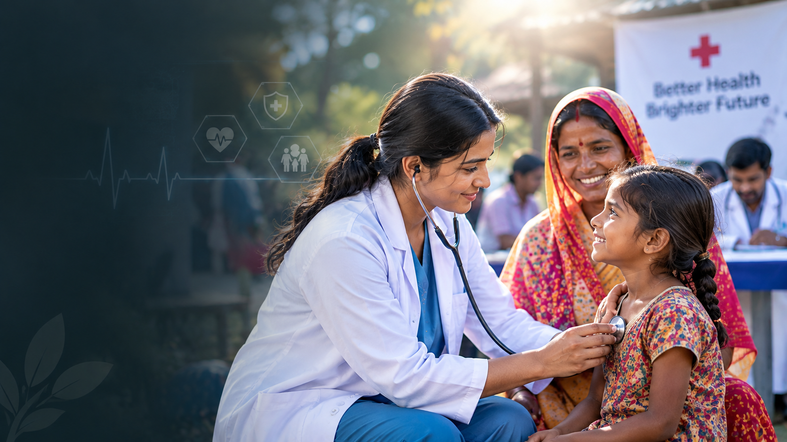
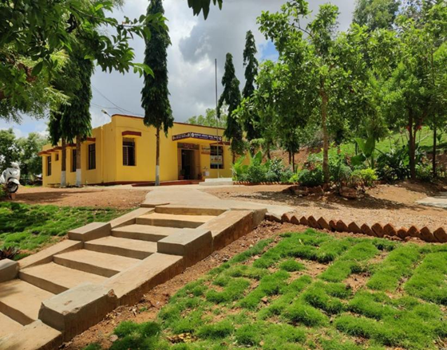
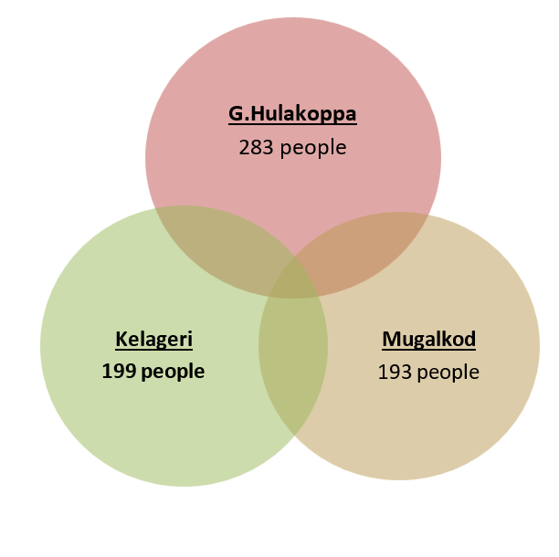
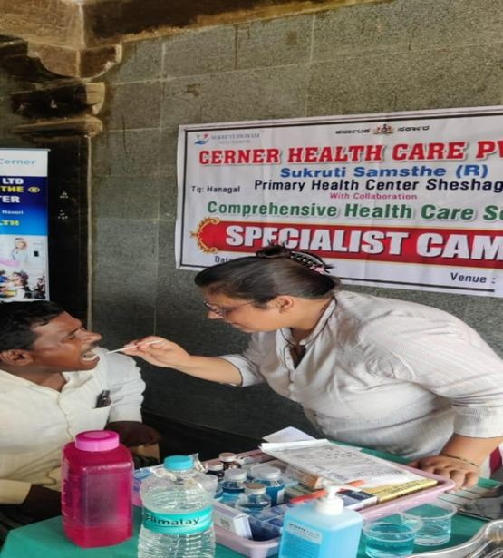
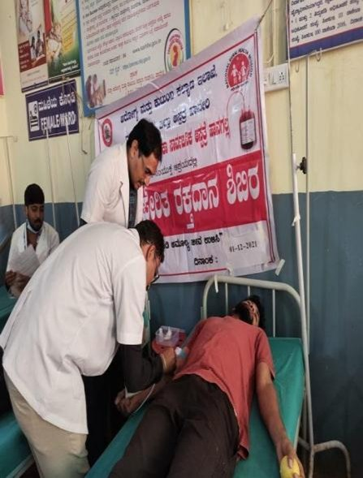
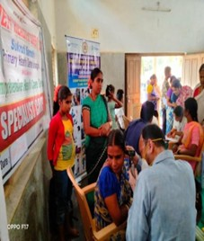
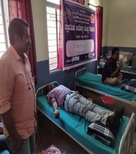

Improving access to healthcare and bringing essential medical services closer to communities.
SUKRUTI SWAYAM SEVA SAMSTE® works to improve healthcare access through community health programs, medical camps, primary healthcare services and technology-driven initiatives.

Our healthcare initiatives focus on making medical services more accessible to communities, particularly in areas where people may have limited access to healthcare facilities.
Through health checkup camps, healthcare facilities and technology-based systems, Sukruti works to support better healthcare delivery.
The organization conducted 3 health checkup camps in villages like G. Hulkoppa, Mugalkod, and Kelgeri.
675 people benefited, receiving checkups and free treatment for common ailments like cold, headache, stomach pain, and more.


Situated in Hanagal, Haveri district, this PHC is managed by Sukruti under the Revised Arogya Bandhu Scheme.
Serving over 19,000 people, we provide full healthcare with medical and paramedical staff and advanced innovations like Electronic Medical Records (EMR).
With EMR software implementation, medical records are stored and analyzed efficiently.
Our OPD rose from 10–15 to 70–80 patients per day. We’ve also set up a standard laboratory and mobile camps to reach remote areas.
Moments from Sukruti's healthcare initiatives and community health activities.



Your support can help strengthen healthcare initiatives and community development.
Donate Now